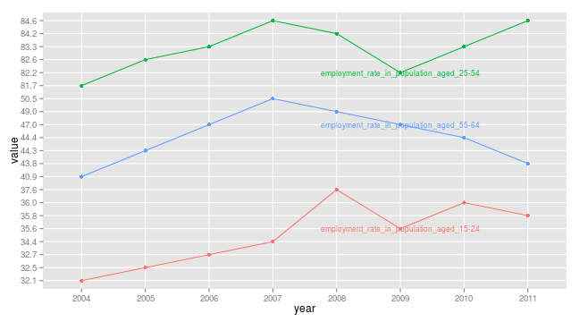

<div id="homepage">

<section class="level2" id="examples-oecd-country-statistical-profile-russia">
<h2>Examples: OECD Country Statistical Profile: Russia</h2>
<p>As Russia is not a member of OECD there is only limited data available in here: <a href="http://www.oecd-ilibrary.org/economics/country-statistical-profile-russian-federation-2013_csp-rus-table-2013-1-en">Country statistical profile: Russian Federation</a>. rustfaRe has function to download indicators from that dataset.</p>
<p>Function <code>IndicatorOecd()</code> returns a data.frame with all the indicators listed.</p>
<pre class="sourceCode r"><code class="sourceCode r"><span class="kw">library</span>(rustfaRe)
<span class="kw">head</span>(<span class="kw">IndicatorOecd</span>())</code></pre>
<pre><code>##                      levels(df.long$indicator)
## 1                                  aquaculture
## 2 average_time_worked_per_person_in_employment
## 3            co2emissions_from_fuel_combustion
## 4                      crude_oil_import_prices
## 5          current_account_balance_of_payments
## 6                              economic_growth</code></pre>
<p>for plotting employment rates of different age classes you can try the following example:</p>
<pre class="sourceCode r"><code class="sourceCode r"><span class="kw">library</span>(rustfaRe)
<span class="kw">library</span>(ggplot2)
dat14_24 &lt;- <span class="kw">GetOecd</span>(<span class="st">&quot;employment_rate_in_population_aged_15-24&quot;</span>)
dat25_54 &lt;- <span class="kw">GetOecd</span>(<span class="st">&quot;employment_rate_in_population_aged_25-54&quot;</span>)
dat55_64 &lt;- <span class="kw">GetOecd</span>(<span class="st">&quot;employment_rate_in_population_aged_55-64&quot;</span>)
dat &lt;- <span class="kw">rbind</span>(dat14_24, dat25_54, dat55_64)

<span class="kw">ggplot</span>(dat, <span class="kw">aes</span>(<span class="dt">x =</span> year, <span class="dt">y =</span> value, <span class="dt">color =</span> indicator, <span class="dt">group =</span> indicator)) + 
    <span class="kw">geom_point</span>() + <span class="kw">geom_line</span>() + <span class="kw">geom_text</span>(<span class="dt">data =</span> <span class="kw">subset</span>(dat, year == <span class="dv">2009</span>), 
    <span class="kw">aes</span>(<span class="dt">x =</span> year, <span class="dt">y =</span> value, <span class="dt">color =</span> indicator, <span class="dt">label =</span> indicator), <span class="dt">size =</span> <span class="dv">3</span>) + 
    <span class="kw">theme</span>(<span class="dt">legend.position =</span> <span class="st">&quot;none&quot;</span>)</code></pre>
<figure>
<figcaption>plot of chunk oecdplot</figcaption>
</figure>
</section>


</div>


